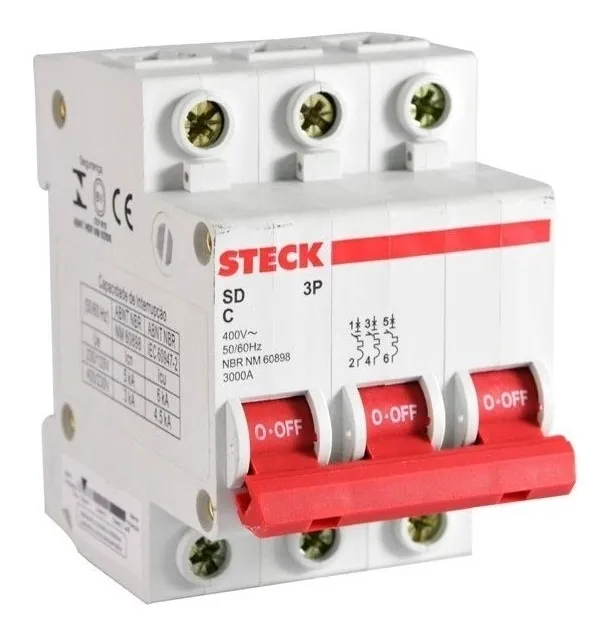

Disjuntores
-
Um disjuntor é um interruptor elétrico projetado para proteger um circuito elétrico de danos causados por falhas na alimentação elétrica, principalmente devido a sobrecorrentes, como excesso de carga ou curto-circuito.
Uma das principais características dos disjuntores é a sua capacidade de serem rearmados após atuarem para interromper o circuito devido a uma falha. Diferem assim dos fusíveis, que também são utilizados para proteção de circuitos, mas que se tornam inutilizáveis após a atuação.
- Disjuntores de Baixa Tensão
- Disjuntor Miniatura (Miniature Circuit Breaker, MCB): Utilizado em aplicações residenciais e comerciais para proteção contra sobrecorrente e curto-circuito.
- Disjuntor de Moldura Moldada (Molded Case Circuit Breaker, MCCB): Projetado para manusear correntes maiores que os MCBs, utilizado em aplicações industriais e comerciais.
- Disjuntores de Média Tensão
- Disjuntor a Vácuo (Vacuum Circuit Breaker, VCB): Utiliza vácuo como meio de extinção de arco, ideal para aplicações de média tensão.
- Disjuntor de Ar (Air Circuit Breaker, ACB): Utiliza ar para extinguir o arco, comumente usado em instalações industriais e comerciais de média tensão.
- Disjuntor de Hexafluoreto de Enxofre (SF6 Circuit Breaker): Utiliza gás SF6 para extinguir o arco, utilizado em subestações elétricas.
- Disjuntores de Alta Tensão
- Disjuntor de Óleo (Oil Circuit Breaker): Utiliza óleo para extinguir o arco, usado em sistemas de alta tensão.
- Disjuntor de Gás (Gas Circuit Breaker): Utiliza gás para extinguir o arco, aplicável em sistemas de transmissão de alta tensão.
- Disjuntores Diferenciais
- Disjuntor Diferencial Residual (Residual Current Circuit Breaker, RCCB): Protege contra choques elétricos e fuga de corrente.
- Disjuntor Diferencial com Proteção contra Sobrecarga (Residual Current Circuit Breaker with Overcurrent, RCBO): Combina proteção contra fugas de corrente e sobrecorrente.
- Disjuntores de Estado Sólido
- Disjuntor de Estado Sólido (Solid State Circuit Breaker): Utiliza componentes eletrónicos para proteção, oferecendo rápida resposta e alta precisão.
- Disjuntores de Sobrecarga Térmica
- Disjuntor de Sobrecarga Térmica (Thermal Overload Circuit Breaker): Utiliza um elemento bimetálico que desliga o circuito quando há sobrecarga térmica.
- Disjuntores de Sobrecarga Magnética
- Disjuntor de Sobrecarga Magnética (Magnetic Overload Circuit Breaker): Usa um solenoide que reage à corrente excessiva, desligando o circuito.
- Disjuntores Termomagnéticos
- Disjuntor Termomagnético (Thermomagnetic Circuit Breaker): Combina proteção térmica e magnética, comum em aplicações residenciais e comerciais.
- Disjuntores de Falha à Terra
- Disjuntor de Falha à Terra (Ground Fault Circuit Breaker, GFCB): Desliga o circuito ao detectar falhas à terra, prevenindo choques elétricos.
- Disjuntores de Corrente Contínua
- Disjuntor de Corrente Contínua (DC Circuit Breaker): Projetado para circuitos de corrente contínua, utilizado em sistemas fotovoltaicos e de energia de backup.
- Disjuntores de Miniatura para PCB
- Disjuntor de Miniatura para PCB (PCB Mount Circuit Breaker): Pequenos disjuntores montados em placas de circuito impresso, usados em eletrónica de consumo.
- Disjuntores Automotivos
- Disjuntor Automotivo (Automotive Circuit Breaker): Utilizado em sistemas elétricos de veículos para proteger contra sobrecorrente e curto-circuito.
- Disjuntores de Rearme Automático
- Disjuntor de Rearme Automático (Automatic Reset Circuit Breaker): Automaticamente rearma após um desligamento, utilizado em aplicações onde a continuidade do serviço é crítica.